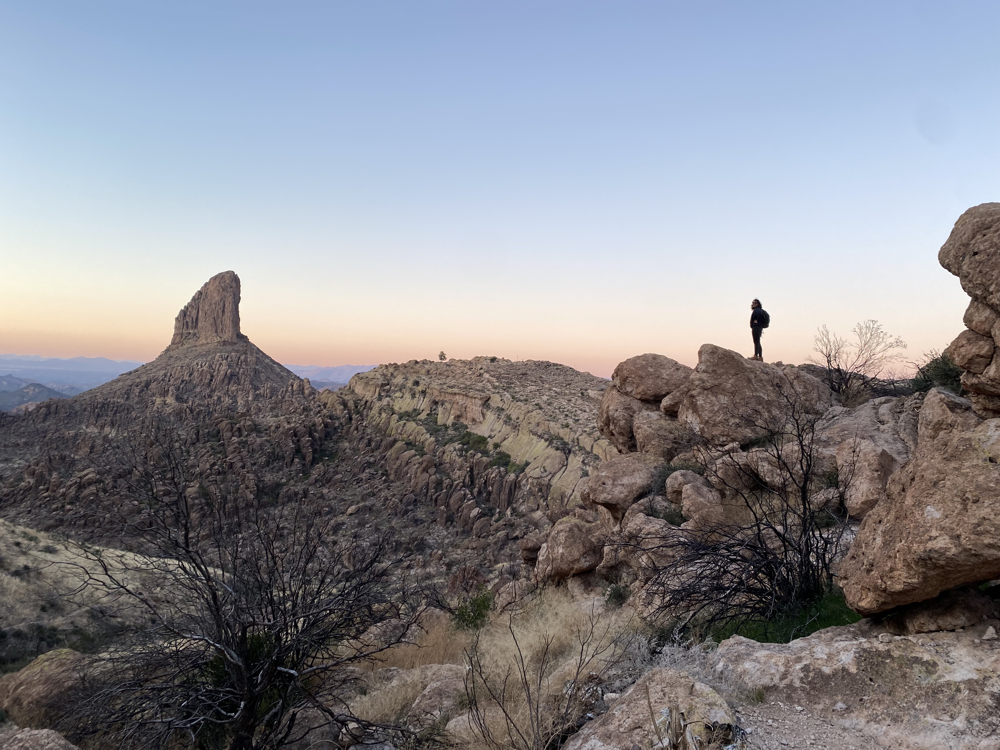
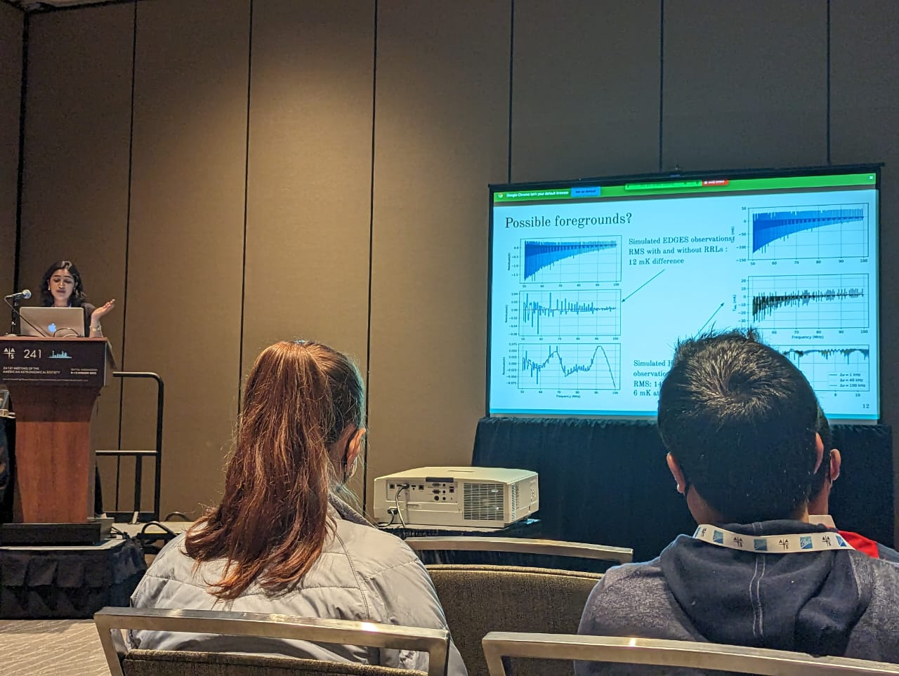

Akshatha K Vydula

Ph.D. Astrophysics Student
School of Earth and Space Exploration, Arizona State University
Click here for Curriculum Vitae
About Me
Education: I grew up in a small town in Karnataka, India. I went to high school in Raichur, and then moved to Bangalore for my undergrad in Electronics & Communication Engineering at RV College of Engineering. I graduated in 2020 ranking 3rd in the University, with my thesis on 'Search for Galactic and high redshift absorption lines with LOFAR'. I then moved to Tempe Arizona, where I am currently pursuing Ph.D. in Astrophysics at the Low-Frequency Cosmology lab, School of Earth and Space Exploration.
Research Interests: My research falls in Radio Astronomy and Experimental Cosmology, specifically focusing on how the first stars and galaxies behaved during the Epoch of Reionization and Cosmic Dawn. Over the summers, I work at Los Alamos National Laboratory in New Mexico on measurement of Neutron lifetime using space-based Neutron Spectrometer.
Outside Work: I like outdoors! If I am not analyzing Radio Astronomical data, I am hiking, backpacking or doing something adventurous like sky-diving. Moving to Arizona has made my outdoor-self very excited with its proximity to numerous trails. I am also getting trained in Krav Maga (an Israeli martial arts) and Kick Boxing on weekday evenings. I enjoy 60s music and religiously listen to NPR and NYT podcasts every single day!
Research

Low Frequency Radio Recombination Lines
Radio Recombination lines are the type of spectral features due to electron transitions in a Rydberg atom. These lines help understand the star formation and measurement of density and temperature of the surrounding gas. I use data from EDGES to detect these unique spectral signatures.
Beam Calibration of LWA using Pulsar Gating
One of my major research interests is studying the phase of the Universe during the formation of the first stars and galaxies. I work with Very Large Array (VLA) and Long Wavelength Array (LWA) for making beam mapping measurements to improve our understanding of the instrument.
Measurement of Neutron lifetime using Space based Neutron Spectrometer
I am helping develop a third independent measurement using data from the Lunar Prospector mission. We make use of interactions between Cosmic rays and the lunar sub-surface that emit gravitationally bound neutrons.
Publications and Writing Samples:
5. VLA 4-band beam width measurement using the holography observing mode
4. Observing Campaign for LWA Beam measurements
3. Sensitivity analysis of pulsar beam mapping with the LWA and VLA
2. Beam Mapping of LWA using Pulsar Gating
1. Low-Frequency Radio Recombination Lines Away From the Inner Galactic Plane
Community

Teaching:
1. Summer Sundial-2021 and Summer Sundial 2023: I helped design and teach a 2-week Astrophysics bootcamp for freshmen undergrads. Here's a short video on it.
2. Astro-India Program: I work with other grad students to design a 12-week Astrophysics curriculum for high-school students in India.
3. Radio Astronomy Bootcamp: I helped design and teach a week-long evening class introducing Radio Astronomy to undergraduate students.
Outreach:
1. Podcast on pivoting career from Engineering to Astrophysics: Engineer turned Astrophysicist
2. Interview on Understanding the Early Universe using 21cm signal: Forest Voices of India
3. SESE Outreach: I help organize outreach activities for the Low Frequency Cosmology lab at SESE public engagement events.
Grad School Resources:
1. Megasheet for shortlisting and applying for schools: (sample only)
Meetings
 This page is a log of meetings/workshops/conferences/site visits I have participated in.
13. Annular Solar Eclipse watch party - Oct 14, 2023 - Kanab UT
12. 19th Synthesis Imaging Workshop - Jun 12-22, 2023 - NRAO Charlottesville, VA
11. LWA Users Meeting 2023 Jun 2-3, 2023 - University of New Mexico, Albuquerque NM
10. VLA 4-band beam measurement campaign (using holography) - May 29 -Jun 1, 2023 - NRAO Array Operations Center, Socorro NM
9. LWA single dipole beam measurement campaign with Drones (part of ECHO/External Calibrator for Hydrogen Observatories) - May 22-27, 2023 - Owens Valley Radio Observatory CA
8. 38th Annual New Mexico Symposium - Feb 17, 2023 - NRAO Array Operations Center, Socorro NM
7. Beam workshop for the Long Wavelength Array (part of Beam Dream Team series of meetings) - Jan 18-22, 2023 - Owens Valley Radio Observatory CA
6. 241st AAS Winter Meeting - Jan 8-12,2023 - Seattle WA
5. 5th Global 21cm Workshop - Oct 17-20 - UC Berkeley CA
4. Intelligent Space Research-1 (Space Science and Applications) Colloquium - Jul 19, 2022 - Los Alamos NM
3. Front-end electronics upgrades for LWA - Nov 2021 - Owens Valley Radio Observatory CA
2. SESE Annual Symposium - Aug 18, 2021, SESE ASU - Tempe, AZ
1. Los Alamos National Lab Summer Symposium - Aug 3-4, 2021, Los Alamos, NM